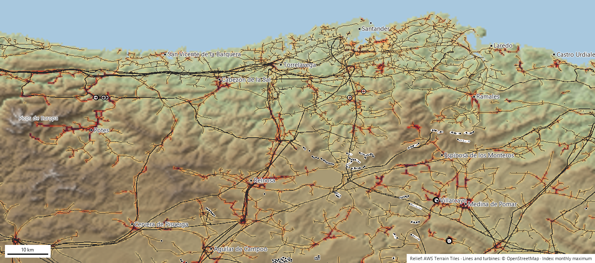
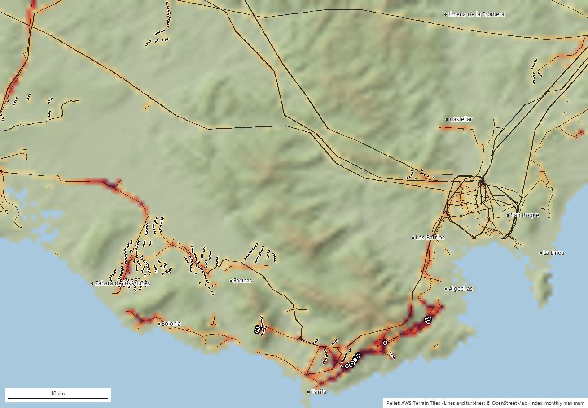

We cross the power lines and wind turbines in OpenStreetMap with where and when the birds are (eBird and GBIF records, Movebank GPS tracking) and with the terrain, to produce an index per 500 m grid cell, species and month, and a ranking of the pylons, line segments and wind turbines most urgently in need of review. It is recalculated every month. All the code and the output data are public.
Distribution power lines electrocute the birds that perch on their pylons; conductors and turbine blades strike them in flight. These are the leading causes of non-natural mortality among large raptors and soaring birds in Spain.
The bird perches on the cross-arm and touches two phases, or a phase and earth. It depends on the pylon design, the type of insulator and whether there are taps or disconnectors. It affects vultures, eagles, storks, kites and Eurasian eagle-owl.
Birds with poor manoeuvrability or flying in flocks, at dawn and dusk: common cranes, storks, Eurasian spoonbills, grey herons, great bustards. Worse on hillsides, passes and flyways.
Soaring birds that use the very updraughts that justify the wind farm: griffon vulture, Egyptian vulture, bearded vulture, golden eagle, kites.
Spanish Royal Decree 1432/2008 requires dangerous lines inside protection zones to be retrofitted, and there is excellent academic work on specific sites and years. But there is no up-to-date, queryable service that tells a utility, a public authority or an NGO which specific elements to review first, in which month and for which species. Retrofitting is decided from old inventories, from mortality someone happened to come across, or segment by segment once a complaint arrives.
A pylon is dangerous if there are many dangerous pylons at that spot, if sensitive birds are there, and if it is the time of year when they use it. Each of those factors can be estimated from open data and updated automatically.
The index is relative to the region (the 99th percentile equals 100): it ranks, it does not certify mortality. A pylon with an index of 300 does not kill three times more than one with 100; it simply brings together more pylons, more sensitive birds and more months of presence than 99% of the grid cells.
The design condition was that anyone could run the project without asking for permission. That holds; the only layer that requires a key (eBird Status & Trends) is ready but not yet loaded.
| Source | What it provides | Volume in the pilots | Licence |
|---|---|---|---|
| OpenStreetMap (Overpass) | Lines with voltage and operator, pylons and poles with their tags (material, insulator, taps), wind turbines | Cantabria: 46,300 pylons, 4,535 segments, 463 turbines Strait: 2,703 pylons, 414 segments, 516 turbines | ODbL |
| GBIF, which integrates the eBird Observation Dataset | Georeferenced records by species, month and year since 2010. Records of all birds measure observation effort | Cantabria: 1.35 M bird records (effort), 101,000 of 18 species Strait: 165,000 records of 16 species | CC0 / CC BY / CC BY-NC depending on the dataset |
| Movebank Data Repository | GPS tracks published alongside the scientific papers: where tagged individuals actually fly | Strait: 296,719 positions of black kite, 64,567 of white stork Cantabria: 5 positions (no published datasets for the area) | CC0 |
| AWS Terrain Tiles (terrarium) | Elevation at 30 m → slope and topographic position index (ridges and passes) | Both regions in full | Public domain |
| Literature | Sensitivity weights by species and mechanism (Bevanger 1998, Janss 2000, Lehman 2007, Marques 2014) and status in the Spanish Catalogue of Threatened Species | 21 species | — |
Strait: griffon vulture, cinereous vulture, Egyptian vulture, Spanish imperial eagle, Bonelli's eagle, golden eagle, short-toed snake eagle, booted eagle, European honey buzzard, black kite and red kite, peregrine falcon, white stork and black stork, common crane and Eurasian eagle-owl. Cantabria swaps the Mediterranean species for bearded vulture, red-billed chough, Eurasian spoonbill and grey heron. Each species carries a weight per mechanism (0-1) and a conservation weight, both adjustable in a single configuration file.
Everything happens on a grid of 0.005° cells (about 450 × 550 m). For each species s, month m and cell, three indices are computed:
electrocution[s,m] = P[s,m] · w_electro[s] · equivalent_pylons (pylons ≤ 66 kV only) line_collision[s,m] = P[s,m] · w_col_lin[s] · km_of_line · (1 + terrain) turbine_collision[s,m] = P[s,m] · w_col_aer[s] · n_wind_turbines · (1 + ridge)
Two pilots with opposite profiles: the Strait, with few pylons but a migration bottleneck and a great deal of GPS data; Cantabria, with 46,000 pylons, no GPS and a mountain avifauna.


Cantabrian pylons peak in February (wintering red kites and arriving storks); the Liébana lines in July; the wind turbines of the Strait during the autumn passage. Retrofitting in the month before the peak is what matters to a utility.
The same raster scores any polygon in seconds. Applied to the notices from the public consultation observatory, the Somaloma-Las Quemadas wind farm (Campoo) reaches a maximum of 329, peaking in September.
The ranking is consistent with what is known about each area, but nobody has gone out to check whether there are carcasses under the top 40 pylons. That is the first action we are asking for (section 7).
Each one changed the code. We set them out because they are the same ones anyone will meet who wants to reproduce or extend the work.
The model already ranks; what is missing is to calibrate it against reality and refine the two weakest layers: the actual presence of birds in rarely visited cells and the actual condition of each pylon.
| Priority | Action | What it fixes | Who can help |
|---|---|---|---|
| 1 | Field-check the top 40 pylons in each region: photograph the design, search for carcasses under the pylon, RD 1432/2008 form. | Validates the ranking and gives the first mortality points for calibration. One weekend of volunteering per region. | Local NGO groups; environmental rangers. |
| 1 | Existing mortality records: power line inventories from the regional governments, wildlife rescue centres (cause of admission and coordinates), utility data and LIFE projects. | Replaces the literature weights with weights estimated by regression on real cases. | Public authorities and rescue centres, with the NGO as counterpart. |
| 1 | eBird Status & Trends as the main abundance layer (weekly, 3 km, modelled with effort). | Removes much of the observer bias and fills in the cells with no records. The loader is already written; what is missing is the key, which is being processed. | Cornell Lab (free research key). |
| 2 | Acoustic stations with BirdNET on wind turbines, on the pylons at the top of the ranking and in rarely visited areas. A microphone plus a single-board computer (BirdNET-Pi or BirdWeather) that identifies songs and calls continuously and publishes the detections; these can be uploaded to eBird as checklists. | Presence 24 hours a day, 365 days a year, without depending on an observer passing by: exact date and time of use of each site. It works very well for choughs, cranes, storks, eagle-owls, jackdaws and passerines; poorly for vultures and eagles, which barely vocalise. Hence it is combined with the next item. | NGOs and wind farm developers (the farms already have power and a network at each turbine). |
| 2 | Cameras and radar at the wind farms: the detection systems already fitted to many wind turbines (selective shutdown) record species, height and trajectory. | Flight height, the variable that no record provides; and ground truth for collision with blades. | Developers; the authorities can require the records to be handed over in the environmental decision. |
| 2 | Pylon design data from the utilities: type of cross-arm, insulator, jumpers, disconnectors on each pylon. | Real hazard ratings instead of the default 1.0 applied to 89% of the pylons. | Distribution companies (Viesgo/EDP, Endesa, i-DE), required to keep inventories under RD 1432/2008. |
| 2 | GPS from the local populations: bearded vultures, Egyptian vultures and the vultures of the Cantabrian range already carry transmitters from conservation programmes. | The layer that improved the Strait most does not exist in Cantabria. An agreement on aggregated use (individual-days per cell) is enough, with no need to hand over tracks. | Fundación para la Conservación del Quebrantahuesos, GREFA, regional authorities. |
| 3 | Targeted citizen science: the effort map itself flags the cells with power lines and no records; ask observers to visit them. | Fills the gaps at zero cost. | NGO members, local eBird groups. |
| 3 | Validation in the Basque Country: a new region and comparison with the Basque Government's official shapefile of dangerous line segments. | A first independent check at no cost. | Us. |
| 3 | PNOA LiDAR terrain (2-5 m) and wind variables. | Better detection of passes and ascent slopes; seasonality of thermals. | IGN (open data). |
On the microphones: automatic song identification is done not by eBird but by BirdNET, from the same laboratory (Cornell Lab of Ornithology). A station costs around €100-150 in components, draws 5 W and detects at some 100-300 m depending on species and noise; on a wind turbine the microphone has to be kept away from the nacelle because of blade noise. It provides presence and phenology with hourly precision, not flight height or collisions: it complements the cameras, it does not replace them.
An institutional counterpart to request mortality records and pylon design data from public authorities and utilities; local groups for the field check of the top pylons in the ranking; agreements on the aggregated use of GPS data; and a pilot area in which to install the first acoustic stations.
Open, documented code with no licence costs; maps and rankings updated every month; new regions in hours (all we need is the bounding box); automatic scoring of the wind farm and power line projects that go out to public consultation, ready for consultation submissions; and GeoTIFF and CSV files that open in QGIS.
A working prototype (version 0.1, September 2026) with two regions, an automated monthly process and a public website. In progress: the eBird Status & Trends key. Next: field checks of the top pylons and a validation region in the Basque Country.